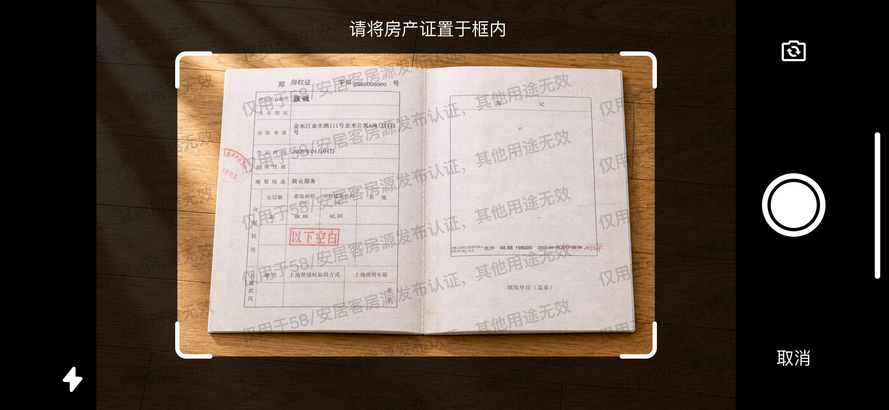
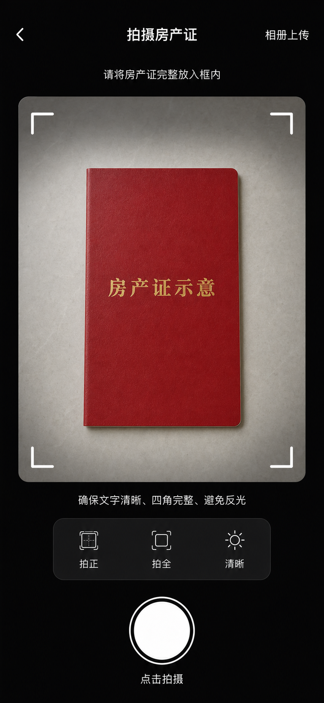
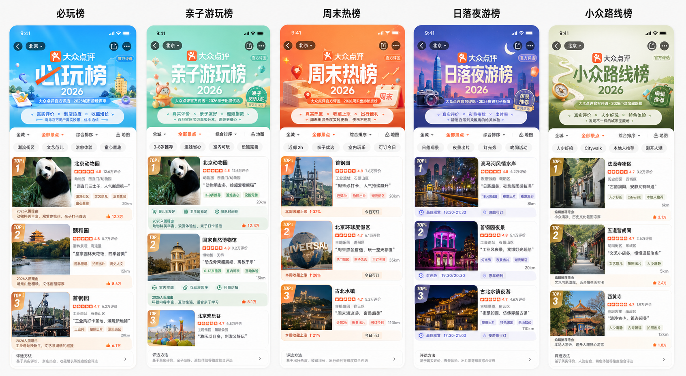
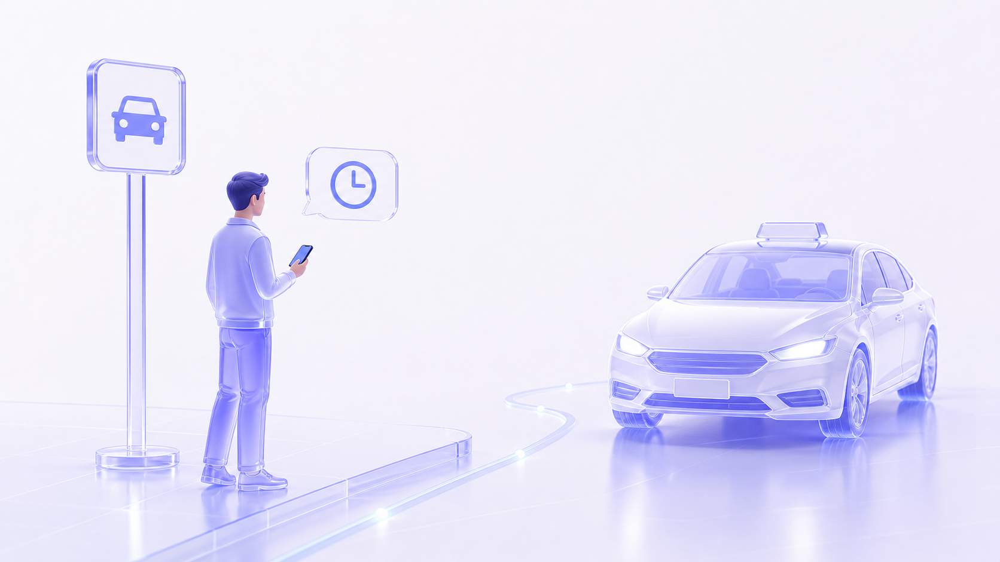
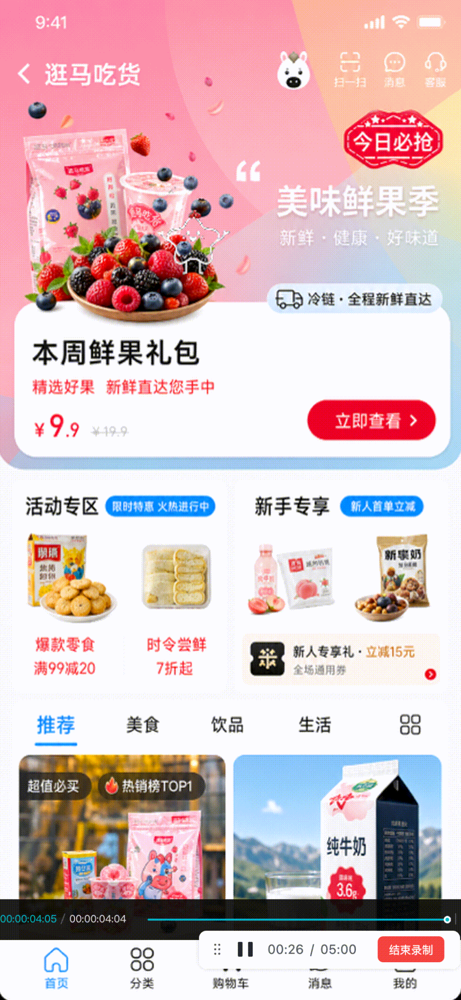
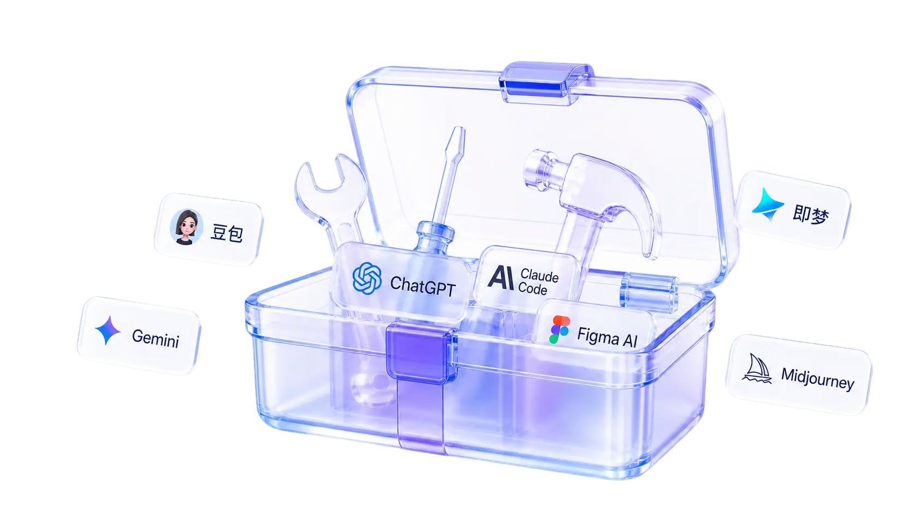
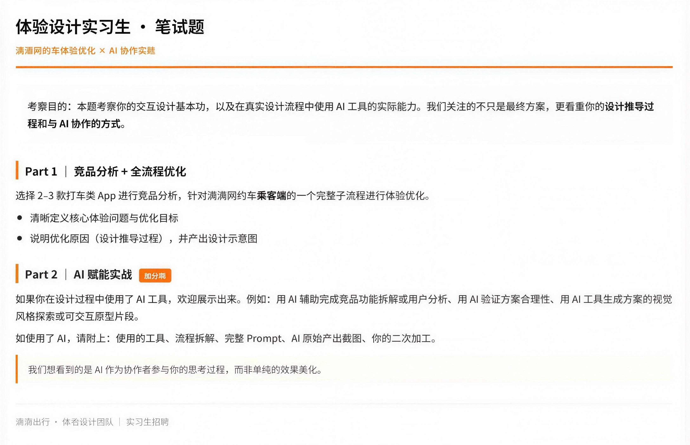

给设计新人的 AI 通识课
看懂 AI 时代，设计师真正该练什么
Q1
会画页面，就是会设计吗？
Q2
有了 AI，怎么帮我做设计？
Q3
每一步都有 AI，设计可以自动驾驶了吗？
Q4
有了 AI 的作品集，就能打动面试官吗？
会画页面，就是会设计吗？
会画页面，就是会设计吗？
两张图，哪一张更好？

好看≠好用
干净≠安全
视觉舒服≠问题被解决
会画页面，就是会设计吗？
两张图，哪一张更好？
没有绝对更好的页面，只有更适合当前目标、用户和场景的方案。
会画页面，就是会设计吗？
企业中，设计师这样定位
一个想法
减少虚假房源
PM
拆解需求清单
让用户上传房产证
设计师
设计解决方案
拍摄引导、用途水印、隐私说明
研发
实现功能
方案代码化
测试
检查问题
方案测试
设计师是美的绘制者、问题的解决者
会画页面，就是会设计吗？
企业中，设计师这样工作
找到问题
用户反馈用户调研
担心被乱用
探索解法
竞品分析
A：官方背书
B：减少步骤
C：可以撤回
D：增加水印
B：减少步骤
C：可以撤回
D：增加水印
做出方案
设计执行
增加水印
验证方案
上线后看数据
上传完成率 32% → 71%
有了 AI，怎么帮我做设计？
有了 AI，怎么帮我做设计？
和平时问豆包一样？
我帮我做一个房产证上传页面。要求简洁、美观、操作方便。
AI好的，已生成一版高保真"拍摄房产证"用户界面：包含完整取景框、拍摄规范提示、相册上传入口和快门按钮。证件采用示意封面，不含真实信息。

有了 AI，怎么帮我做设计？
找到问题
用户反馈
用户调研
用户调研
收集用户反馈提炼用户场景制作问卷梳理问题
探索解法
竞品分析
竞品分析
作出方案
设计执行
发散方向梳理规范
验证方案
上线后看数据
Vibe Coding Demo
有了 AI，怎么帮我做设计？
AI 辅助-收集用户反馈


用户反馈从“很难拿到”，变成“几分钟看到”
有了 AI，怎么帮我做设计？
AI 辅助-问题整理和提炼

有了 AI，怎么帮我做设计？
AI 辅助-梳理规范

有了 AI，怎么帮我做设计？
AI 辅助-方案发散

有了 AI，怎么帮我做设计？
AI 辅助- Vibe Coding Demo
有了 AI，怎么帮我做设计？
找到问题
探索解法
作出方案
验证方案
在AI 让信息获取更快、方案更多、验证更早
每一步都有 AI，
设计可以自动驾驶了吗？
每一步都有 AI，设计可以自动驾驶了吗？
同理心
AI 可以快速整理反馈，但不能听见文字下面的情绪
用户反馈
房源描述不知道写什么
上传房产证太麻烦了
为什么要上传房产证
房子看似是发布了实则是隐藏了
租客老是问了不来看房
为什么总是下架我的房子
情绪之下
表面问题是步骤多觉得麻烦，真实原因可能是担心证件被盗用
看用户在哪一步停顿、在哪一步问客服、在哪一步放弃——
答案藏在动作里，不在文字里。
每一步都有 AI，设计可以自动驾驶了吗？
复杂业务
AI 可以摊开业务规则，但不能做取舍

司机还没接单
司机已接单，还没出发
司机已出发，正在赶来
司机已到达上车点
用户找不到车
司机迟到
用户临时改变行程
是否收取消费
是否影响司机接单评分
取消订单
每一步都有 AI，设计可以自动驾驶了吗？
复杂角色
AI 可以整理不同角色诉求，但不能平衡冲突
用户
客服
司机
平台方
运营
法务
风控
每一步都有 AI，设计可以自动驾驶了吗？
判断决策，靠的是见过多少
AI 可以快速生成大量方向，但不能替代设计师的长期积累

每一步都有 AI，设计可以自动驾驶了吗？
观察与验证
AI 可以快速制作 Demo，但不能替你观察真实用户

有了 AI 的作品集，
就能打动面试官吗？
有了 AI 的作品集，就能打动面试官吗？
把 AI 工具写满一页，就能加分吗？

🤔
你到底解决了什么问题？
工具数量 ≠ 设计能力
有了 AI 的作品集，就能打动面试官吗？
面试官真正关注的是什么？

使用了什么工具
是否具备 AI 使用意识
具体使用过程
AI 进入了设计流程的哪一步
AI 产出
AI 给了你什么初始结果
你的二次加工
你做了哪些判断、筛选和修改
有了 AI 的作品集，就能打动面试官吗？
什么样的作品集可以打动他？


Q1 会画页面，就是会设计吗？
不是，设计师是美的绘制者，也是问题的解决者
Q2 有了 AI，怎么帮我做设计？
AI 可以进入设计师的完整工作流：找到问题、探索解法、做出方案、验证方案，能让每一步都变快。
Q3 每一步都有 AI，设计可以自动驾驶了吗？
不能。AI 提高的是速度，设计师决定的是质量。问题是否找对、方案是否合适、用户是否真的愿意使用，都需要设计师判断。
Q4 有了 AI 的作品集，就能打动面试官吗？
不一定，打动面试官的不是“我用了 AI”，而是 AI 帮我推进了过程，我做出了判断。
同理心是地基
要理解谁、在什么时候、遇到了什么问题。
想象力是天空
要持续的积累，看到不止一种解决方式。
中间是逻辑、协作和工具
能讲清楚方案如何推导，能在复杂业务规则里理清优先级，也能在产品、研发、运营、法务、客服等不同角色的目标冲突中做取舍。
AI 是一把强有力的工具
它可以帮你跑得更快，看得更多，验证得更早，但不能替你决定应该跑向哪里。